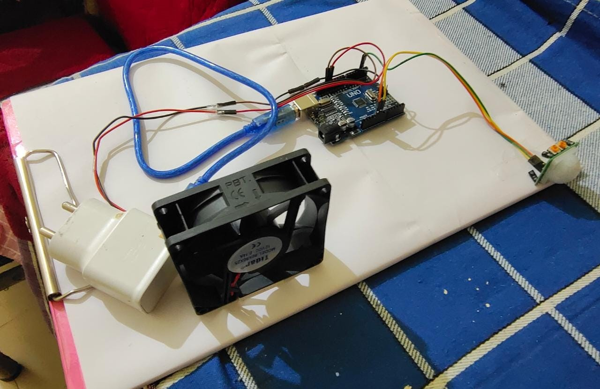

Smart Fan

Abstract
Problem Statement
To reduce the energy wastage caused due to the unnecessary working of electric fan , and to make life easier.
Problem Solution
Hence after analyzing the problems and requirements , we have decided to create a SMART FAN. This idea is selected as a best suited solution to satisfy the needs and requirements of the customer.
Solution
- ⟶ Detecting the motion of people.
- ⟶ It turns on as soon as the person enters the room.
- ⟶ It turns off whenever the motion is not detected.
- ⟶ It not only saves electricity but also make life easier.
- ⟶ In this project we have tried to show a smart way to control the power consumption and power saving.